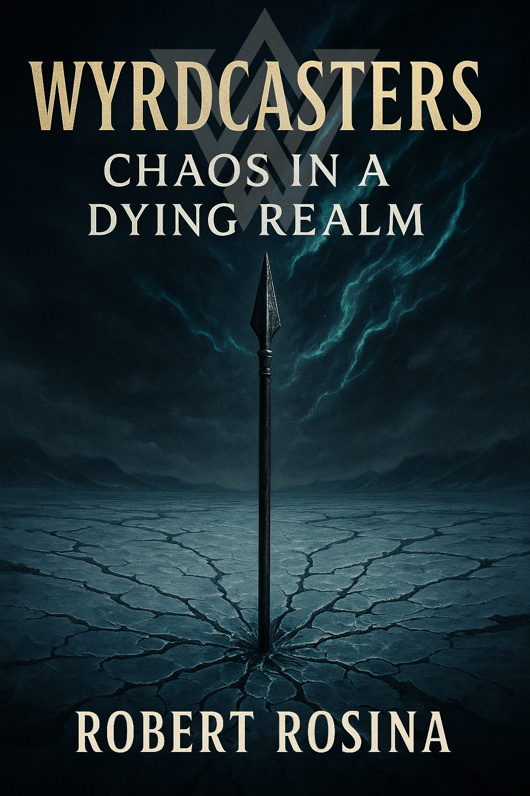
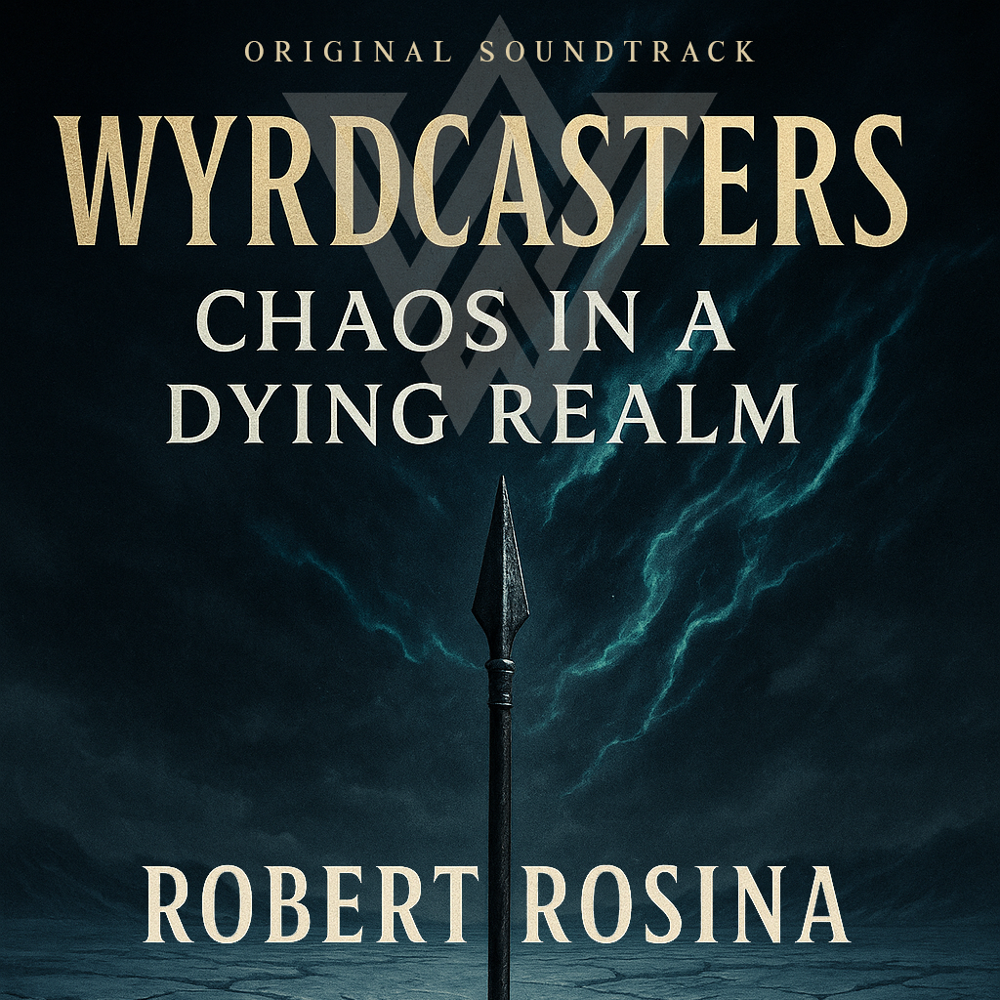

Formerly a corporate lawyer, Robert Rosina was admitted to the Supreme Court of New South Wales and holds a Juris Doctor with distinction from Macquarie University—where he received the Highest Achiever award in both Alternative Dispute Resolution and Health Law—and a Bachelor of Media with distinction. He now serves as the hands-on director of Creative Textures, a start-up high-end plastering and painting company. A compulsive dabbler, Robert is also a prolific composer and the author of the forthcoming novel Wyrcasters: Chaos in a Dying World.
Wyrdcasters: Chaos in a Dying Realm

Discover the secret origins of the Norse gods in Wyrdcasters: Chaos in a Dying Realm.
When the mysterious Kalypso returns from death and unseals the Brimholt Rift—a void intent on rewriting reality—a dark corruption spreads across Midheim, unleashing monsters, madness, and metaphysical mayhem. As the world begins to shatter, a fractured group of unstable heroes—known as Wyrdcasters—emerges as its final hope. With Kalypso’s genocidal crusade set against them, they must band together and become legends worthy of myth to prevent the annihilation of their realm.
Inspired by Indo-European mythology, The Saga of the Wyrdcasters is at the heart of a mythic universe. Rather than offering a strict retelling of myth, the saga extrapolates from the Eddas, imagining a world where the Norse gods were real — evolved and advanced beings whose stories were distorted by the limitations of ancient understanding. At its heart, the epic explores spiritual evolution and inner decay, tracing the descent of complex characters as they navigate madness, metaphysics, and the unravelling of a collapsing spiritual cosmos as it spirals toward Ragnarök.
Wyrdcasters: Chaos in a Dying Realm is a visionary tale of salvation and collapse, inspired by Indo-European mythology.
Wyrdcasters: Chaos in a Dying Realm - Soundtrack
A haunting musical companion to the first installment of the Wyrdcasters saga.

Each chapter of Wyrdcasters: Chaos in a Dying Realm is paired with a musical cue from this accompanying soundtrack, capturing its feeling, essence, and metaphysical undercurrents. In essence, the album extends the mythos into sound, offering a cinematic experience that mirrors the emotional arc of the saga. Blending orchestral grandeur, ancient folk textures, dark ambient dreamscapes, and progressive elements, the soundtrack deepens the listener's connection to the Wyrdcasters universe by experiencing it through music.